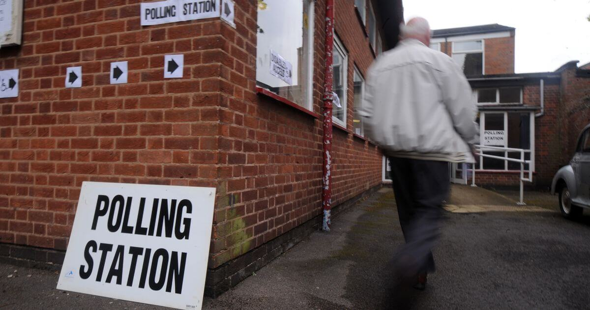

02.21.2018
How blockchain-based online elections
can save democracy

Eman Rayyan

Political scientists from Harvard and Melbourne University warn that democracy is in a state of deep decline. Even in the richest and most politically stable regions, confidence in democratic institutions is rapidly decreasing, especially among young people.
For a long time, liberal democracy was considered the only correct form of government. Furthermore, Winston Churchill noted:
“At the bottom of all the tributes paid to democracy is the little man, walking into the little booth, with a little pencil, making a little cross on a little bit of paper — no amount of rhetoric or voluminous discussion can possibly diminish the overwhelming importance of that point”.
But these words don’t correlate with the realities of life. An article published by Yasha Munk, Lecturer in Political Theory at Harvard University’s Government Department, and Roberto Stefan Foa, Lecturer in Political Science at the University of Melbourne, states that over the past few decades people have gradually "cooled down" towards democracy, voter turnout has fallen and political party membership has plummeted in virtually all established democracies.
Sunset of democracy:
In their article, the political scientists rely on research published by the World Values Survey in 2017, which polled people from nearly 100 countries. The survey studies "changing values and their impact on social and political life".
The researchers are most concerned that citizens in North America and Western Europe have begun to criticize their political leaders.
“Rather, they have also become more cynical about the value of democracy as a political system, less hopeful that anything they do might influence public policy, and more willing to express support for authoritarian alternatives.”
Use cases for democracy
One of the tools that can help facilitate this is blockchain technology. A blockchain is essentially a decentralized database capable of storing information that is distributed, i.e., not in one place but spread across the computers of all the network members. This technology solves three main problems that democracy and electoral systems face everywhere: the risk of vote rigging, low turnout and the laborious process of counting votes.
Because it’s transparent and secure, blockchain technology can help restore people’s confidence in the political process. After all, corruption still blights elections in countries where democracy is not firmly established. Currently, voters go to a polling station, fill out their ballot papers and place them in ballot boxes for independent officials to count. This method is based on trusting the authorities to collect and count votes honestly. Who can guarantee the honesty and incorruptibility of this approach? Most likely no one.
With blockchain technology, anonymous votes are encrypted into the blockchain and counted and decrypted automatically, without revealing any intermediate results. It’s impossible to interfere or influence the process. It may sound fantastic, but this is exactly how the Polys online voting system works. Moreover, any voter can personally verify that their vote has been accepted, written down in a blockchain and taken into account. Of course, this requires certain skills, but it is possible.
When voters see the result, there will be no room for doubt. And here we turn to the next advantage of online elections based on blockchain technology — an increase in turnout. (Of course, ‘turnout’ may not the best way to describe the process of voting via the Internet, without actually visiting a polling station.)
But perhaps the main advantage of online elections based on blockchain technology is not the increased turnout and not even the reduction in costs, but a strong interest among today’s youth.